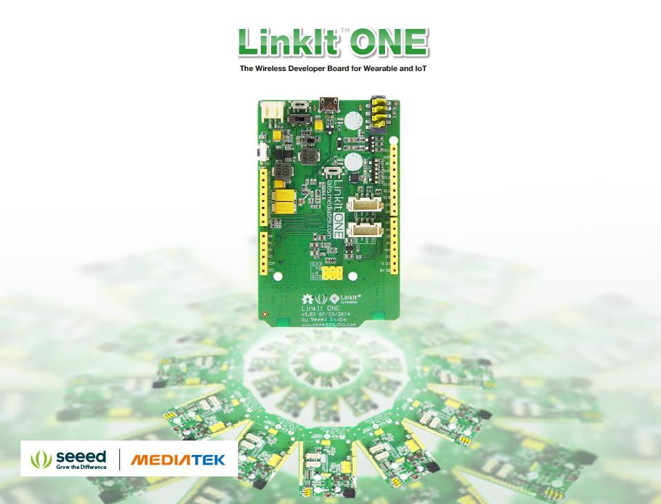

This is the new-released SD card V4.0 shield. It provides a storage space for your Arduino. Users can read/write SD card via Arduino’s built-in SD library. It supports SD, SDHC and Micro SD cards. It will only occupy the SPI port of your Arduino. Comparing to previous versions, it combines the standart SD slot and the Micro SD slot into a standard one, the included adaptor enables using of Micro SD cards . You can stack on other shields that work with the unused pins. Additionally, the preformed I2C and UART port facilitates your connection with Grove modules.
| Item | Min | Typical | Max | Unit |
|---|---|---|---|---|
| Voltage | 3.5 | 5.0 | 5.5 | V |
| Current | 0.159 | 100 | 200 | mA |
| Supported Card Type | SD card(<=32G); Micro SD card(<=32G); SDHC card(<=32G) | / | ||
| Dimension | 68.7x53.5x19.00 | mm | ||
| Net Weight | 14.8 | g | ||
Pins usage on Arduino （with SD card）
D4: SD_CS;
D11: SD_DI;
D12: SD_DO;
D13: SD_CLK.
Note: The SD card format can be FAT16 or FAT32.The size of SD card and the SDHC card more than 16GB is not supported.
The following is instruction of the SD card shield.
1. Insert your SD card into the socket, Plug the SD Card Shield onto the Arduino .
2. Connect the Arduino to PC using USB cable.
Note: When you use a Micro SD card, please insert Micro SD card into the adopter, and then insert the Micro SD card Adopter into the socket as shown below.
When you complete the hardware installation, it should look like this
1. Restart the Arduino IDE. Open "CardInfo"example via the path: File --> Examples --> SD --> CardInfo.
This example shows how use the utility libraries on which the SD library is based in order to get info about your SD card.Very useful for testing a card when
you're not sure whether its working or not. There are also many other examples in this library, like “ReadWrite”. You can always try them out.
There has a brief description to above code:
First checks if the card is working. if not, there will output some reasons that may lead to this result.
In the case of the SD card normal work, it will print the SD card type.Then print the type and size of the FAT-type volume.
Finally, get the files information such as name, date and size in bytes that found on the card.
2. Upload the code. If you do not know how to upload code, please click here.
3. View Results.You can see the follow image after Click the serial monitor.
4. If an error occurs, please recheck all the previous steps, and make sure the SD card is working. If none of that fixes the problem, try replacing the SD card.
Arduino default code return SD size incorrectly if your SD card more than 4G.
The following code can solve this issue.
/*
SD card test
This example shows how use the utility libraries on which the'
SD library is based in order to get info about your SD card.
Very useful for testing a card when you're not sure whether its working or not.
The circuit:
* SD card attached to SPI bus as follows:
** MOSI - pin 11 on Arduino Uno/Duemilanove/Diecimila
** MISO - pin 12 on Arduino Uno/Duemilanove/Diecimila
** CLK - pin 13 on Arduino Uno/Duemilanove/Diecimila
** CS - depends on your SD card shield or module.
** Pin 4 used here for consistency with other Arduino examples
created 28 Mar 2011
by Limor Fried
modified 9 Apr 2012
by Tom Igoe
*/
// include the SD library:
#include <SPI.h>
#include <SD.h>
// set up variables using the SD utility library functions:
Sd2Card card;
SdVolume volume;
SdFile root;
// change this to match your SD shield or module;
// Arduino Ethernet shield: pin 4
// Adafruit SD shields and modules: pin 10
// Sparkfun SD shield: pin 8
const int chipSelect = 4;
void setup()
{
// Open serial communications and wait for port to open:
Serial.begin(9600);
while (!Serial) {
; // wait for serial port to connect. Needed for Leonardo only
}
Serial.print("\nInitializing SD card...");
// On the Ethernet Shield, CS is pin 4. It's set as an output by default.
// Note that even if it's not used as the CS pin, the hardware SS pin
// (10 on most Arduino boards, 53 on the Mega) must be left as an output
// or the SD library functions will not work.
pinMode(10, OUTPUT); // change this to 53 on a mega
// we'll use the initialization code from the utility libraries
// since we're just testing if the card is working!
if (!card.init(SPI_HALF_SPEED, chipSelect)) {
Serial.println("initialization failed. Things to check:");
Serial.println("* is a card is inserted?");
Serial.println("* Is your wiring correct?");
Serial.println("* did you change the chipSelect pin to match your shield or module?");
return;
} else {
Serial.println("Wiring is correct and a card is present.");
}
// print the type of card
Serial.print("\nCard type: ");
switch (card.type()) {
case SD_CARD_TYPE_SD1:
Serial.println("SD1");
break;
case SD_CARD_TYPE_SD2:
Serial.println("SD2");
break;
case SD_CARD_TYPE_SDHC:
Serial.println("SDHC");
break;
default:
Serial.println("Unknown");
}
// Now we will try to open the 'volume'/'partition' - it should be FAT16 or FAT32
if (!volume.init(card)) {
Serial.println("Could not find FAT16/FAT32 partition.\nMake sure you've formatted the card");
return;
}
// print the type and size of the first FAT-type volume
uint64_t volumesize64;
uint32_t volumesize32;
Serial.print("\nVolume type is FAT");
Serial.println(volume.fatType(), DEC);
Serial.println();
volumesize64 = volume.blocksPerCluster(); // clusters are collections of blocks
volumesize64 *= volume.clusterCount(); // we'll have a lot of clusters
volumesize64 *= 512; // SD card blocks are always 512 bytes
Serial.print("Volume size (bytes): ");
printLLNumber(volumesize64, DEC);
Serial.println();
Serial.print("Volume size (Kbytes): ");
volumesize32 = volumesize64/1024;
Serial.println(volumesize32);
Serial.print("Volume size (Mbytes): ");
volumesize32 /= 1024;
Serial.println(volumesize32);
/*uint64_t volumesize;
Serial.print("\nVolume type is FAT");
Serial.println(volume.fatType(), DEC);
Serial.println();
volumesize = volume.blocksPerCluster(); // clusters are collections of blocks
volumesize *= volume.clusterCount(); // we'll have a lot of clusters
volumesize *= 512; // SD card blocks are always 512 bytes
Serial.print("Volume size (bytes): ");
Serial.println(volumesize,DEC);
Serial.print("Volume size (Kbytes): ");
volumesize /= 1024;
Serial.println(volumesize,DEC);
Serial.print("Volume size (Mbytes): ");
volumesize /= 1024;
Serial.println(volumesize,DEC);
*/
Serial.println("\nFiles found on the card (name, date and size in bytes): ");
root.openRoot(volume);
// list all files in the card with date and size
root.ls(LS_R | LS_DATE | LS_SIZE);
}
void loop(void) {
}
void printLLNumber(uint64_t n, uint8_t base)
{
unsigned char buf[16 * sizeof(long)];
unsigned int i = 0;
if (n == 0)
{
Serial.print((char)'0');
return;
}
while (n > 0)
{
buf[i++] = n % base;
n /= base;
}
for (; i > 0; i--)
Serial.print((char) (buf[i - 1] < 10 ?
'0' + buf[i - 1] :
'A' + buf[i - 1] - 10));
}
SD Card Shield v4.0 Eagle File.zip
SD Card Shield v4.3 Eagle file.zip
It's a pity that we don't have any demo about SD Card Shield in the Recipe yet.
Post your awesome project about SD Card Shield to win $100 Coupon!. Please feel free to contact us: recipe@seeed.cc
Here we introduce some projects about LinkIt ONE using SD Card.

The LinkIt ONE development board is an open source, high performance board for prototyping Wearables and IoT devices.
It's based on the world's leading SoC for Wearables, MediaTek Aster (MT2502) combined with high performance Wi-Fi (MT5931)
and GPS (MT3332) chipsets to provide you with access to all the features of MediaTek LinkIt.
It also provides similar pin-out features to Arduino boards, making it easy for you to connect to various sensors, peripherals, and Arduino shields.
This project uses Grove - Water Sensor to create a simple but effective solution to watering plants.
How it works:
I want to make it.
More Awesome Projects by SD Card
Born with the spirit of making and sharing, that is what we believe makes a maker.
And only because of this, the open source community can be as prosperous as it is today.
It does not matter what you are and what you have made, hacker, maker, artist or engineers.
As long as you start sharing your works with others, you are being part of the open source community and you are making your contributions.
Now share your awesome projects with us on Recipe, and win a chance to become the Core User of Seeed.
Get more information about Core User, please email to: recipe@seeed.cc